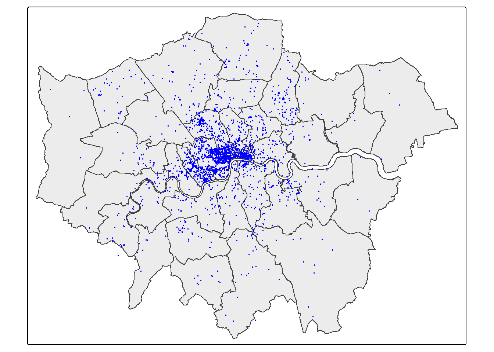
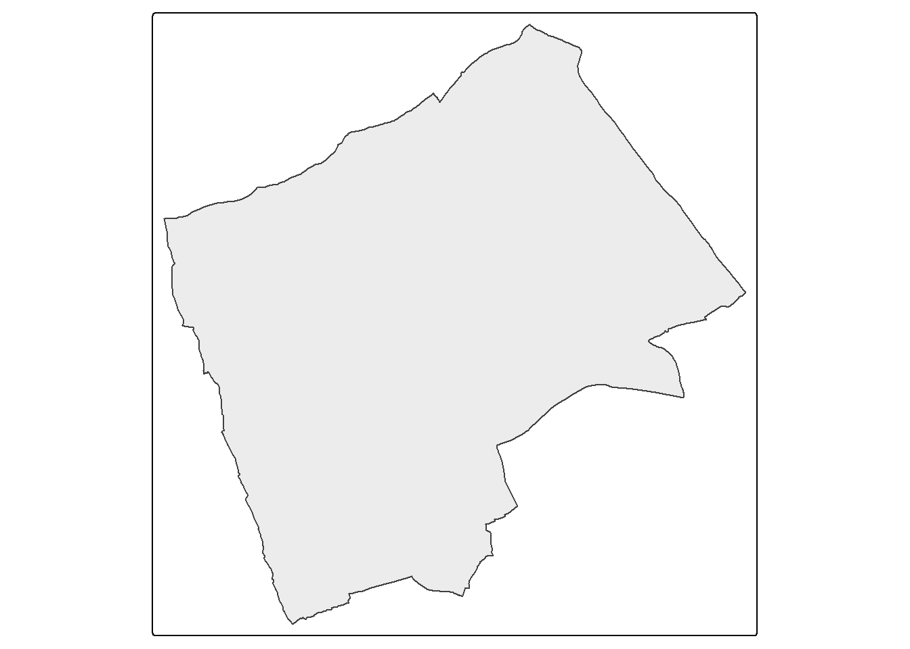
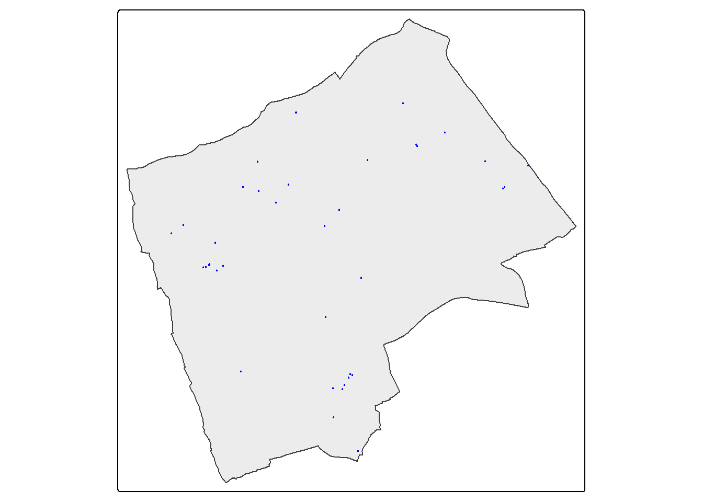
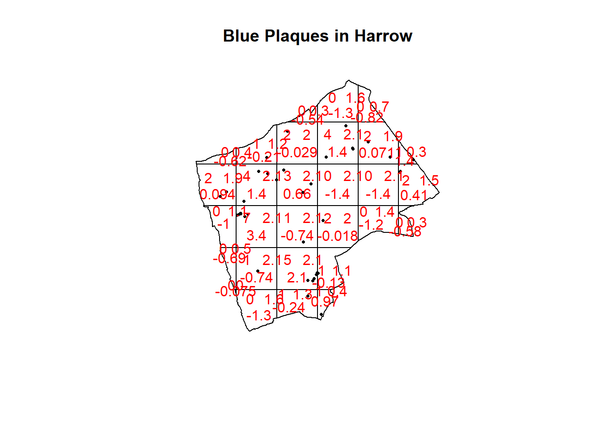

Chapter 6 Detecting spatial patterns
6.1 Learning outcomes
By the end of this practical you should be able to:
- Describe and evaluate methods for analysing spatial patterns
- Execute data cleaning and manipulation appropriate for analysis
- Determine the locations of spatial clusters using point pattern analysis methods
6.2 Homework
Outside of our scheduled sessions you should be doing around 12 hours of extra study per week. Feel free to follow your own GIS interests, but good places to start include the following:
Exam
Each week we will provide a short task to test your knowledge, these should be used to guide your study for the final exam.
For the task this week use the tools you have learnt to start on a relevant practice exam question, however, next week we will explore spatial autocorrelation so you are not expected to finish your practice attempt this week.
Reading
This week:
Chapter 11 “Point Pattern Analysis†from Intro to GIS and Spatial Analysis by Gimond (2019).
Chapter 9 “Hypothesis testing†from Modern Dive by Ismay and Kim (2019).
Local models for spatial analysis by Lloyd (2010)
Using OpenStreetMap point-of-interest data to model urban change—A feasibility study by Zhang and Pfoser (2019).
Remember this is just a starting point, explore the reading list, practical and lecture for more ideas.
6.3 Recommended listening 🎧
Some of these practicals are long, take regular breaks and have a listen to some of our fav tunes each week.
Adam This week it’s the head honcho himself, the man, the legend that is Tony Colman, CEO and founder of Hospital Records — his new album Building Better Worlds is a masterpiece! Enjoy!
6.4 Introduction
In this practical you will learn how to begin to analyse patterns in spatial data. Using data you are already familiar with, this week, you will explore some techniques for analysing patterns of point data in R. Then, next week, you will explore spatial autocorrelation using R.
In this analysis we will analyse the patterns of Blue Plaques — you will see these placed on around the UK linking the buildings of the present to people of the past.
The question we want to answer is: “For any given London Borough, are the Blue Plaques within that borough distributed randomly or do they exhibit some kind of dispersed or clustered pattern?”
Before we progress, take a minute to go back and refelct on Grolemund and Wickham’s typical workflow of a data science (or GIS) project from workshop 1
To answer this question, we will make use of some of the Point Pattern Analysis functions found in the spatstat package.
6.5 Setting up your data
Now, assuming that you’ve got a copy of your London Boroughs shapefile (from week 1) in your new week 6 folder, along with a shapefile of your Blue Plaques. If not.. read in the data from the ONS geoportal
##First, get the London Borough Boundaries
LondonBoroughs <- st_read(here::here("Prac1_data", "statistical-gis-boundaries-london", "ESRI", "London_Borough_Excluding_MHW.shp"))## Reading layer `London_Borough_Excluding_MHW' from data source
## `C:\Users\Andy\OneDrive - University College London\Teaching\CASA0005\CASA0005repo\prac1_data\statistical-gis-boundaries-london\ESRI\London_Borough_Excluding_MHW.shp'
## using driver `ESRI Shapefile'
## Simple feature collection with 33 features and 8 fields
## Geometry type: MULTIPOLYGON
## Dimension: XY
## Bounding box: xmin: 503568.2 ymin: 155850.8 xmax: 561957.5 ymax: 200933.9
## Projected CRS: OSGB36 / British National Grid# Or use this to read in directly.
#LondonBoroughs <- st_read("https://opendata.arcgis.com/datasets/8edafbe3276d4b56aec60991cbddda50_4.geojson")Pull out London using the str_detect() function from the stringr package in combination with filter() from dplyr (again!). We will look for the bit of the district code that relates to London (E09) from the ‘lad15cd’ column data frame of our sf object.
library(stringr)
BoroughMap <- LondonBoroughs %>%
dplyr::filter(str_detect(GSS_CODE, "^E09"))%>%
st_transform(., 27700)
qtm(BoroughMap)## NAME GSS_CODE HECTARES NONLD_AREA
## Length:33 Length:33 Min. : 314.9 Min. : 0.00
## Class :character Class :character 1st Qu.: 2724.9 1st Qu.: 0.00
## Mode :character Mode :character Median : 3857.8 Median : 2.30
## Mean : 4832.4 Mean : 64.22
## 3rd Qu.: 5658.5 3rd Qu.: 95.60
## Max. :15013.5 Max. :370.62
## ONS_INNER SUB_2009 SUB_2006 numeruc
## Length:33 Length:33 Length:33 Min. : 3
## Class :character Class :character Class :character 1st Qu.: 1443
## Mode :character Mode :character Mode :character Median : 3615
## Mean : 5038
## 3rd Qu.: 7231
## Max. :17036
## geometry
## MULTIPOLYGON :33
## epsg:27700 : 0
## +proj=tmer...: 0
##
##
## Now get the location of all Blue Plaques in the City direct from the web
##Now get the location of all Blue Plaques in the City
#BluePlaques <- st_read("https://s3.eu-west-2.amazonaws.com/openplaques/open-plaques-london-2018-04-08.geojson")Or read them in from your project folder.
BluePlaques <- st_read(here::here("prac6_data",
"open-plaques-london-2018-04-08.geojson")) %>%
st_transform(.,27700)## Reading layer `open-plaques-london-2018-04-08' from data source
## `C:\Users\Andy\OneDrive - University College London\Teaching\CASA0005\CASA0005repo\prac6_data\open-plaques-london-2018-04-08.geojson'
## using driver `GeoJSON'
## Simple feature collection with 2812 features and 2 fields
## Geometry type: POINT
## Dimension: XY
## Bounding box: xmin: -0.477 ymin: 0 xmax: 0.21903 ymax: 51.6783
## Geodetic CRS: WGS 84## id inscription geometry
## Min. : 1.0 Length:2812 POINT :2812
## 1st Qu.: 711.8 Class :character epsg:27700 : 0
## Median : 6089.0 Mode :character +proj=tmer...: 0
## Mean :10622.0
## 3rd Qu.:10358.2
## Max. :49190.0#plot the blue plaques in the city
tmap_mode("plot")
tm_shape(BoroughMap) +
tm_polygons(fill_alpha = 0.5)+
tm_shape(BluePlaques) +
tm_dots(fill = "blue", size=0.1)
6.5.1 Data cleaning
Now, you might have noticed that there is at least one Blue Plaque that falls outside of the Borough boundaries. Errant plaques will cause problems with our analysis, so we need to clip the plaques to the boundaries…First we’ll remove any Plaques with the same grid reference as this will cause problems later on in the analysis..
6.5.2 Spatial subsetting
Now just select the points inside London - thanks to Robin Lovelace for posting how to do this one, very useful! Here, the second operator is blank , , - this controls which attributes are kept, although I’d rather keep all of them and manipulate with the tidyverse.
BluePlaquesSub <- BluePlaques[BoroughMap,]
#plot the blue plaques in the city
tmap_mode("plot")
#check to see that they've been removed
tm_shape(BoroughMap) +
tm_polygons(fill_alpha = 0.5)+
tm_shape(BluePlaquesSub) +
tm_dots(fill = "blue", size=0.1)
When we spatial subset data like this there are different topological relations we can specify. The default is intersects, but we could also use BluePlaquesSub <- BluePlaques[BoroughMap, , op = st_within], with the operator or op set to st_within, to identify points completely within the borough outline. Any topological operator from the mapping week can be used here!
We can also just use the function which will have the indices of where they intersect.
6.5.3 Spatial clipping
In a similar theme to topological relations we can also use spatial clipping. This is where we take to layers and extract something. For example, where do the polygons from two different datasets overlap? We want to make a new layer of just the overlapping area…this is somewhat similar to the joins we explored with attribute data (e.g. joining based on a unique attribute column) but here we use shapes…
](prac6_images/venn-clip-1.png)
Figure 6.1: Topological relations between vector geometries. Source: Lovelace et al. 2022
6.5.4 Key advice
Over the last two weeks we’ve seen:
- Spatial joining
- Spatial sub-setting
- Spatial clipping
Question….do i want to:
Select points or polygons in a polygon (Selecting data by location) = spatial sub-setting. This is just presence or absence within (or whatever function we use) an sf object.
- This could also be a topological function (e.g. week 5 -
Hotels_example <-st_contains(Londonborough, OSM)). However, this can give us a geometric (geometry) intersection (e.g. a sf output of intersecting points), compared to just a binary presence or absence.
- This could also be a topological function (e.g. week 5 -
Determine where datasets overlap (or touch, or don’t overlap) and extract those parts = spatial clipping
Join two spatial datasets together = spatial joining, which can use spatial subsetting functions as the default is
st_intersects(). This function joins spatial data.
Finally,
- Selecting data by attributes = filtering or selecting rows / columns with dplyr
Most of these functions are not R specific, you will find them other software such as PostGIS (a database for spatial data).
What is the difference between st_intersects() and st_intersection()
6.5.5 Study area
From this point, we could try and carry out our analysis on the whole of London, but you might be waiting until next week for Ripley’s K to be calculated for this many points. Therefore to speed things up and to enable us to compare areas within London, we will select some individual boroughs. First we need to subset our sf object to pull out a borough we are interested in. I’m going to choose Harrow as I know there are few enough points for the analysis to definitely work. If you wish, feel free to choose another borough in London and run the same analysis, but beware that if it happens that there are a lot of blue plaques in your borough, the analysis could fall over!!
#extract the borough
# select by attribute
Harrow <- BoroughMap %>%
filter(., NAME=="Harrow")
#Check to see that the correct borough has been pulled out
tm_shape(Harrow) +
tm_polygons(col = NA, fill_alpha = 0.5)
Next we need to clip our Blue Plaques so that we have a subset of just those that fall within the borough or interest
#clip the data to our single borough
BluePlaquesSub <- BluePlaques[Harrow,]
#check that it's worked
tm_shape(Harrow) +
tm_polygons(fill_alpha = 0.5)+
tm_shape(BluePlaquesSub) +
tm_dots(fill = "blue", size=0.1)
We now have all of our data set up so that we can start the analysis using spatstat. The first thing we need to do is create an observation window for spatstat to carry out its analysis within — we’ll set this to the extent of the Harrow boundary

spatstat has its own set of spatial objects that it works with (one of the delights of R is that different packages are written by different people and many have developed their own data types) — it does not work directly with the SpatialPolygonsDataFrames, SpatialPointsDataFrames or sf objects that we are used to. For point pattern analysis, we need to create a point pattern (ppp) object.
#create a sp object
BluePlaquesSub<- BluePlaquesSub %>%
as(., 'Spatial')
#create a ppp object
BluePlaquesSub.ppp <- ppp(x=BluePlaquesSub@coords[,1],
y=BluePlaquesSub@coords[,2],
window=window)Try to understand what the different elements in command above is doing. If you are unsure, you can run elements of the code, for example:
## [1] 516451.0 518560.0 514177.1 515166.2 513053.6 515093.1 515210.7 516746.3
## [9] 513371.5 514971.1 517339.4 512215.1 515300.0 514966.0 512639.2 515561.8
## [17] 515561.8 511539.4 516725.5 512335.7 515370.2 518598.3 511792.6 515694.1
## [25] 513008.4 514805.8 513392.3 518187.5 513750.4 512466.7 515491.4 514789.8
## [33] 514022.4 519099.9 514183.4 512343.1 512508.2 512346.3 512269.5 515333.7Have a look at the new ppp object

6.6 Point pattern analysis
6.6.1 Kernel Density Estimation
One way to summarise your point data is to plot the density of your points under a window called a ‘Kernel’. The size and shape of the Kernel affects the density pattern produced, but it is very easy to produce a Kernel Density Estimation (KDE) map from a ppp object using the density() function.
The sigma value sets the diameter of the Kernel (in the units your map is in — in this case, as we are in British National Grid the units are in metres). Try experimenting with different values of sigma to see how that affects the density estimate.
6.6.2 Quadrat Analysis
So as you saw in the lecture, we are interesting in knowing whether the distribution of points in our study area differs from ‘complete spatial randomness’ — CSR. That’s different from a CRS! Be careful!
The most basic test of CSR is a quadrat analysis. We can carry out a simple quadrat analysis on our data using the quadrat count function in spatstat. Note, I wouldn’t recommend doing a quadrat analysis in any real piece of analysis you conduct, but it is useful for starting to understand the Poisson distribution…
#First plot the points
plot(BluePlaquesSub.ppp,
pch=16,
cex=0.5,
main="Blue Plaques in Harrow")
#now count the points in that fall in a 6 x 6
#grid overlaid across the windowBluePlaquesSub.ppp2<-BluePlaquesSub.ppp %>%
BluePlaquesSub.ppp %>%
quadratcount(.,nx = 6, ny = 6)%>%
plot(., add=T, col="red")
In our case here, want to know whether or not there is any kind of spatial patterning associated with the Blue Plaques in areas of London. If you recall from the lecture, this means comparing our observed distribution of points with a statistically likely (Complete Spatial Random) distibution, based on the Poisson distribution.
Using the same quadratcount() function again (for the same sized grid) we can save the results into a table:
#run the quadrat count
Qcount <- BluePlaquesSub.ppp %>%
quadratcount(.,nx = 6, ny = 6) %>%
as.data.frame() %>%
dplyr::count(Var1=Freq)%>%
dplyr::rename(Freqquadratcount=n)Check the data type in the first column — if it is factor, we will need to convert it to numeric
## Var1 Freqquadratcount
## 1 integer integerOK, so we now have a frequency table — next we need to calculate our expected values. The formula for calculating expected probabilities based on the Poisson distribution is:
\[Pr= (X =k) = \frac{\lambda^{k}e^{-\lambda}}{k!}\] where:
xis the number of occurrencesλis the mean number of occurrenceseis a constant- 2.718
sums <- Qcount %>%
#calculate the total blue plaques (Var * Freq)
mutate(total = Var1 * Freqquadratcount) %>%
dplyr::summarise(across(everything(), sum))%>%
dplyr::select(-Var1)
lambda<- Qcount%>%
#calculate lambda
mutate(total = Var1 * Freqquadratcount)%>%
dplyr::summarise(across(everything(), sum)) %>%
mutate(lambda=total/Freqquadratcount) %>%
dplyr::select(lambda)%>%
pull(lambda)Calculate expected using the Poisson formula from above \(k\) is the number of blue plaques counted in a square and is found in the first column of our table…
QCountTable <- Qcount %>%
mutate(Pr=((lambda^Var1)*exp(-lambda))/factorial(Var1))%>%
#now calculate the expected counts based on our total number of plaques
#and save them to the table
mutate(Expected= (round(Pr * sums$Freqquadratcount, 0)))
#Compare the frequency distributions of the observed and expected point patterns
plot(c(1,5),c(0,14), type="n",
xlab="Number of Blue Plaques (Red=Observed,Blue=Expected)",
ylab="Frequency of Occurances")
points(QCountTable$Freqquadratcount,
col="Red",
type="o",
lwd=3)
points(QCountTable$Expected, col="Blue",
type="o",
lwd=3)Comparing the observed and expected frequencies for our quadrant counts, we can observe that they both have higher frequency counts at the lower end — something reminiscent of a Poisson distribution. This could indicate that for this particular set of quadrants, our pattern is close to Complete Spatial Randomness (i.e. no clustering or dispersal of points). But how do we confirm this?
To check for sure, we can use the quadrat.test() function, built into spatstat. This uses a Chi Squared test to compare the observed and expected frequencies for each quadrant (rather than for quadrant bins, as we have just computed above).
A Chi-Squared test determines if there is an association between two categorical variables. The higher the Chi-Squared value, the greater the difference.
If the p-value of our Chi-Squared test is < 0.05, then we can reject a null hypothesis that says “there is no pattern - i.e. complete spatial randomness - in our data†(think of a null-hypothesis as the opposite of a hypothesis that says our data exhibit a pattern). What we need to look for is a value for p > 0.05. If our p-value is > 0.05 then this indicates that we have CSR and there is no pattern in our points. If it is < 0.05, this indicates that we do have clustering in our points.
## Warning: Some expected counts are small; chi^2 approximation may be inaccurateplot(BluePlaquesSub.ppp,pch=16,cex=0.5, main="Blue Plaques in Harrow")
plot(teststats, add=T, col = "red")
Here our p-value = 0.2594, implying complete spatial randomness. But there are limitations of using qudrants like this…that we will explore next.
Note the warning message — some of the observed counts are very small (0) and this may affect the accuracy of the quadrant test. Recall that the Poisson distribution only describes observed occurrances that are counted in integers — where our occurrences = 0 (i.e. not observed), this can be an issue. We also know that there are various other problems that might affect our quadrat analysis, such as the modifiable areal unit problem.
In the new plot, we can see three figures for each quadrant. The top-left figure is the observed count of points; the top-right is the Poisson expected number of points; the bottom value is the residual value (also known as Pearson residual value), or (Observed - Expected) / Sqrt(Expected).
This is the first mention of the mathematician Karl Pearson who founded the world’s first university statistics department here at UCL. Pearson was a eugenicist and the Unversity’s first Chair of Eugenics that was established on the request of Galton (who coined the term eugenics and Pearson studied under) for the residue of his estate. Throuhgout research you may encounter Pearson’s name as it is used to identify certain techniques, for example, Pearson’s product-moment coefficient (alternatively just product-moment coefficient). Where possible within this book I have removed references to Pearson, although as you will see later on some arguments in functions still require the value “pearson†and certain output messages default to include his name. UCL recently denamed spaces and buildings named after Pearson and Galton.
6.6.3 Try experimenting…
Try running a quadrant analysis for different grid arrangements (2 x 2, 3 x 3, 10 x 10 etc.) — how does this affect your results?
6.6.4 Ripley’s K
One way of getting around the limitations of quadrat analysis is to compare the observed distribution of points with the Poisson random model for a whole range of different distance radii. This is what Ripley’s K function computes.
We can conduct a Ripley’s K test on our data very simply with the spatstat package using the kest() function.

# we can also extract the plot into a dataframe
Kval <- as.data.frame(Kest(BluePlaquesSub.ppp, correction = "Ripley"))Ripley’s K is defined as…
\[K(r) = \lambda^{-1} \sum{i}\sum{j}\frac{I(d_ij<r)}{n}\]
In English: Ripley’s K value for any circle radius \(r\) =
The average density of points for the entire study region (of all locations) \(\lambda = (n/ \Pi r^2))\)
Multiplied by the sum of the distances \(d_ij\) between all points within that search radius, see Dixon page 2 and Amgad et al. 2015
Divided by the total number of points, n
I = 1 or 0 depending if \(d_ij < r\)
The plot for K has a number of elements that are worth explaining. First, the Kpois(r) line in Red is the theoretical value of K for each distance window (r) under a Poisson assumption of Complete Spatial Randomness. The Black line is the estimated values of K accounting for the effects of the edge of the study area.
Here, the correction specifies how points towards the edge are dealt with, in this case, border means that points towards the edge are ignored for the calculation but are included for the central points. Section 2.1, here explains the different options.
Where the value of K falls above the line, the data appear to be clustered at that distance. Where the value of K is below the line, the data are dispersed. From the graph, we can see that up until distances of around 1300 metres, Blue Plaques appear to be clustered in Harrow, however, at around 1500 m, the distribution appears random and then dispersed between about 1600 and 2100 metres.
6.6.5 Alternatives to Ripley’s K
There are a number of alternative measures of spatial clustering which can be computed in spatstat such as the G and the L functions — I won’t go into them now, but if you are interested, you should delve into the following references:
Bivand, R. S., Pebesma, E. J., & Gómez-Rubio, V. (2008). “Applied spatial data analysis with R.†New York: Springer.
Brundson, C., Comber, L. (2015) “An Introduction to R for Spatial Analysis & Mapping”. Sage.
Baddeley, A. (2010) “Analysing spatial point patterns in R”
6.7 Density-based spatial clustering of applications with noise: DBSCAN
Quadrat and Ripley’s K analysis are useful exploratory techniques for telling us if we have spatial clusters present in our point data, but they are not able to tell us WHERE in our area of interest the clusters are occurring. To discover this we need to use alternative techniques. One popular technique for discovering clusters in space (be this physical space or variable space) is DBSCAN. For the complete overview of the DBSCAN algorithm, read the original paper by Ester et al. (1996) or consult the wikipedia page
We will now carry out a DBSCAN analysis of blue plaques in my borough to see if there are any clusters present.
## Geometry set for 33 features
## Geometry type: MULTIPOLYGON
## Dimension: XY
## Bounding box: xmin: 503568.2 ymin: 155850.8 xmax: 561957.5 ymax: 200933.9
## Projected CRS: OSGB36 / British National Grid
## First 5 geometries:DBSCAN requires you to input two parameters: 1. Epsilon - this is the radius within which the algorithm with search for clusters 2. MinPts - this is the minimum number of points that should be considered a cluster
Based on the results of the Ripley’s K analysis earlier, we can see that we are getting clustering up to a radius of around 1200m, with the largest bulge in the graph at around 700m. Therefore, 700m is probably a good place to start and we will begin by searching for clusters of at least 4 points…
#first extract the points from the spatial points data frame
BluePlaquesSubPoints <- BluePlaquesSub %>%
coordinates(.)%>%
as.data.frame()
#now run the dbscan analysis
db <- BluePlaquesSubPoints %>%
fpc::dbscan(.,eps = 700, MinPts = 4)
#now plot the results
plot(db, BluePlaquesSubPoints, main = "DBSCAN Output", frame = F)
plot(BoroughMap$geometry, add=T)
You could also use kNNdistplot() from the dbscan package to find a suitable eps value based on the ‘knee’ in the plot…
# used to find suitable eps value based on the knee in plot
# k is no of nearest neighbours used, use min points
library(dbscan)
BluePlaquesSubPoints%>%
dbscan::kNNdistplot(.,k=4)This plot shows for each point the average distance to the k neighbours, which are then plotted in ascending order. The knee is where this value (of distance to neighbours) increases. See this article from Data Novia for more information on this
So the DBSCAN analysis shows that for these values of eps and MinPts there are three clusters in the area I am analysing. Try varying eps and MinPts to see what difference it makes to the output.
Now of course the plot above is a little basic and doesn’t look very aesthetically pleasing. As this is R and R is brilliant, we can always produce a much nicer plot by extracting the useful information from the DBSCAN output and use ggplot2 to produce a much cooler map…
Our new db object contains lots of info including the cluster each set of point coordinates belongs to, whether the point is a seed point or a border point etc. We can get a summary by just calling the object
## dbscan Pts=40 MinPts=4 eps=700
## 0 1 2 3 4
## border 16 1 0 3 4
## seed 0 6 8 1 1
## total 16 7 8 4 5If you open up the object in the environment window in RStudio, you will also see the various slots in the object, including cluster
## [1] 0 3 0 1 4 0 1 0 4 1 0 2 1 1 2 0 0 0 0 2 1 3 0 0 0 0 4 3 4 2 0 0 4 3 0 2 2 2
## [39] 2 1We can now add this cluster membership info back into our dataframe
Next we are going to create some convex hull polygons to wrap around the points in our clusters. This means we will create a smallest polygon that encloses the set of points of each cluster. We will
- convert this dataframe to an sf object
- make convex hulls around the clusters
- plot
# convert the data frame to sf
BluePlaquesSubPoints_sf <- st_as_sf(BluePlaquesSubPoints,
coords = c("coords.x1", "coords.x2"),
crs = 27700)
# make the convex hulls around the cluster points
chull_polygons <- BluePlaquesSubPoints_sf %>%
# remove any points not in a cluster
filter(dbcluster>0)%>%
group_by(dbcluster) %>%
summarise(geometry = st_combine(geometry)) %>% # combine points
mutate(geometry = st_convex_hull(geometry)) %>% # convex hull
st_as_sf()Now create a ggplot2 object from our data.
In past iterations we used to get a base map we would:
- set a bounding box
- Extract the coordinates of the bounding box
- Pull an OSM base map from the OpenStreetMap package.
However, now we can do this all from within the annotation_map_tile() function from the ggspatial package
Here:
fillis for the interior colour (e.g. polygons)coloris for borders and points
## Warning: package 'ggspatial' was built under R version 4.4.3# Create the map
ggplot() +
annotation_map_tile(zoom = 13) +
geom_sf(data = BluePlaquesSubPoints_sf, aes(color=dbcluster), size = 3)+
geom_sf(data = chull_polygons, aes(fill = dbcluster),
alpha = 0.8,
# remove polygon borders
color = NA,
show.legend = FALSE) +
theme_bw()## Zoom: 13
6.8 Point pattern analysis summary
This is end of the point pattern analysis section of the practical. You have been introduced to the basics of Point Pattern Analysis examining the distribution of Blue Plaques in a London Borough. At this point, you may wish to try running similar analyses on different boroughs (or indeed the whole city) and playing with some of the outputs — although you will find that Ripley’s K will fall over very quickly if you try to run the analysis on that many points)
This how you might make use of these techniques in another context or with different point data…
6.9 Feedback
Was anything that we explained unclear this week or was something really clear…let us know using the feedback form. It’s anonymous and we’ll use the responses to clear any issues up in the future / adapt the material.